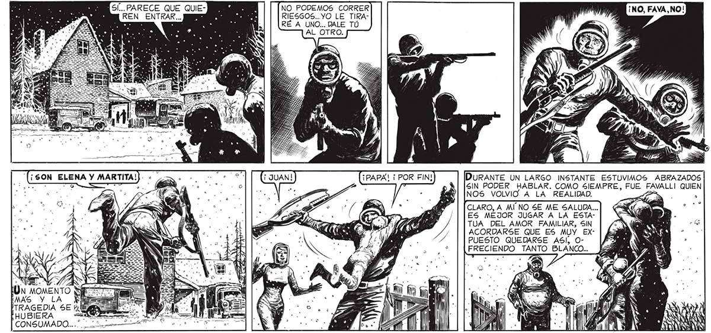

YE NUEVO LA CALLE TAN FAMILIAR: SOLO QUE AHORA, SEMISEPULTADO POR LA NEVADA ESTABA ALLI POLSKY, NUESTRO AMIGO... Y EL AUTO VOLCADO... IN ¡QUIETO! ¡EN EL JARDÍN DEL EA CHALET HAY ALGUIEN! p + WWW 50 POR LA vaya UNO A SABER A RER HACIA. QUE DRAMA SE HA E EL INCENDIO VIVIDO ALLI... ÉN UNA CALLE LATERAL, A VARIAS CUADRAS, VIMOS ARDER UNA CASA. Y NI SE NOS PAAPURE AUN MAS. PERO UNA MANO ME FRENO, PARA AYUDAR: al, O NNRA VERDADERAMEN- -—<S ME: QA AN TE, ERAMOS ¡de A LOBOS, OCUPA DOS CADA UNO EN DEFENDERSE A SÍ MISMO, A 65U GRUPO. LLEGAMOS POR FIN A LA VISTA DEL CHALET. 5... PARECE QUE QUIE- BN a NO PODEMOS CORRER REN ENTRAR... ES RIESGOS...YO LE TIRAA : es y RÉ A UNO... DALE TÚ , d : Fe € Si O: PS , 0 eN . Y AA DURANTE UN LARGO INSTANTE ESTUVIMOS ABRAZADOS SIN PODER HABLAR. COMO SIEMPRE, FUE FAVALLI QUIEN NOS VOLVIO” A LA REALIDAD. CLARO, A MI NO 5E ME SALUDA... ES MEJOR JUGAR A LA ESTATUA DEL AMOR FAMILIAR, SIN ACORDARSE QUE ES MUY EXPUESTO QUEDARSE ASI, OFRECIENDO TANTO BLANCO... ¡PAPA! ¡ POR FIN! ? k 5 "e — . = hl = ES A GA l aj ' =- (Ju Ss » > > Ñ a A Ñ N AQ - - MAN ¿0 ES Oy A E || y S : A L 1 Le O a . $ A » > a a = IN - eo $ ! = el . É “o IN Pl AY Ñ SB, | : - - A o A ' , ñ + s p . o a > MES pm ' e os ú y 7 " Ñ AAA = == a _ sn e l E, IE A > ól a 3 ) is " * . » e l > AAA E ” My mM ¡A ” , Ú iz A . ¿ % Ñ " - pe) ll ¿8 AA
